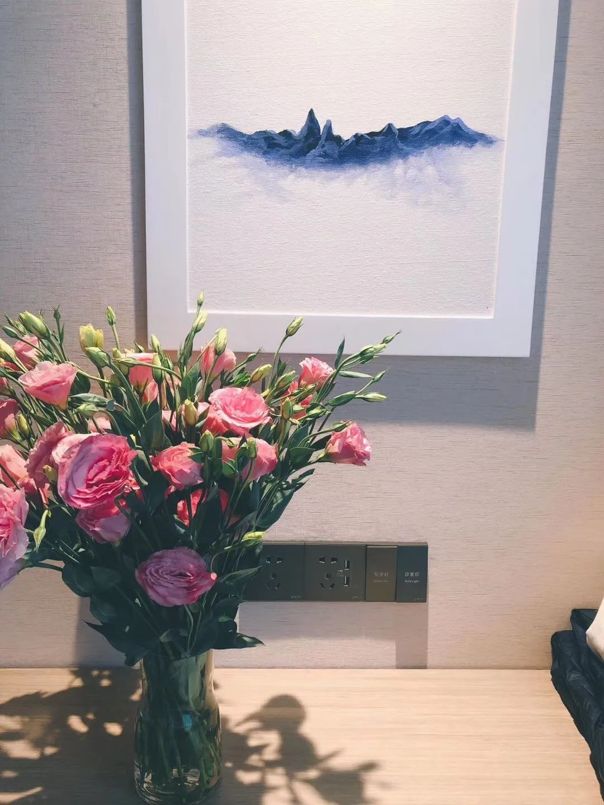
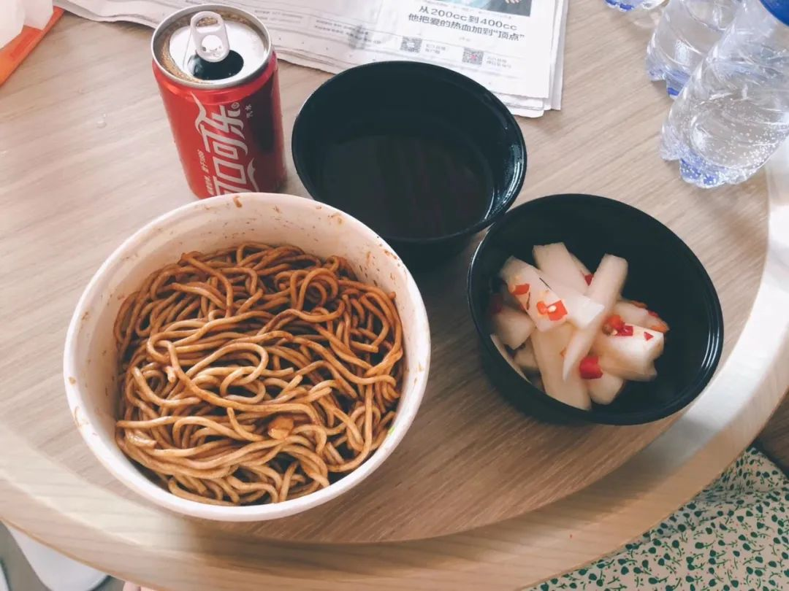

特别报道|武汉火线救人50天现场全记录
原文链接 备份链接 “很多人去世。”袁鸣说，“但他们和我们都尽了最大的努力。” 2月15日上午，刚刚经历了一夜冬日雷雨和大风的武汉大雪纷飞，袁鸣早早进入病房查房。依次穿上蓝色隔离服、白色防护服，戴上手术帽、面屏和护目镜，套上手套和脚 …

她会因为想家哭鼻子，也会因为喝到可乐而幸福感爆棚。她自愿报名到武汉一线为患者服务，我又钦佩她的坚强和勇敢。
文 | 吴美芬
小葵是从北京到武汉支援的一名护士，今年24岁。2月7日她到达武汉，至今已经有20天。2月19日，我通过之前采访过的患者家属翁文联系上她。2月22日，小葵在休息日接受了我的采访，讲述她支援武汉重症病房的经历。
小葵在武汉服务的是重症患者，每天工作强度很大。有一天，她因为生理期不适，在病房晕过去，被同事扶着走出病区。稍微恢复后，她却说：“好气啊！浪费了一套防护服，没有让它发挥大作用。”她心疼防护服，我心疼她。
希望疫情早日结束，让可爱的姑娘们早日回家吧。
以下是小葵的自述：
三次请缨，支援武汉
大年二十八，医院让各病房选好赴武汉支援的护士，护士长先是在当月应急梯队里选。我没在梯队里，科室报了另外两个护士的名字。但这两个护士一个有孩子，另一个刚结完婚准备要小孩。我没结婚，没有孩子，家里人也都支持。我就跟领导说，我们科室报我的名字。
我们医院的第一批支援队伍，在大年初一出发，我报了名但没选上。直到第三批才轮到我。医院是先从呼吸监护室、重症科、感染科和急诊科等几个对口的科室优先选派支援力量。我是在血液科，所以排得比较后。
我从小在奶奶身边长大，头两次报名不敢跟她说，怕她吃不下饭，睡不好觉，只是跟父母商量了一下。第三次被选上后，才跟奶奶说。奶奶特别厉害，她说：“我都猜到了，你当护士就应该承担起这份责任。你该去，家里不用担心。”
2月7日凌晨5点，为了准时出征，科室领导安排专车来家里接我，我男朋友跟着一起送到医院门口。我们俩刚刚交往十天，没能一起过第一个情人节有点遗憾。送别时，他说会买好礼物等我回去。
到了首都机场，已经看到北京很多家医院的支援队在那里，跟我们同一个航班的有三家医院的人。
十点半起飞，约两小时后，我们降落在武汉天河机场。
一下飞机便感觉到区别。北京是大晴天，武汉是阴天。接我们的大巴车在路上开时，街道上看不到人，一个空城充满了生化危机的感觉。我们坐的车全是消毒液的味道，司机师傅穿着防护服，戴着手套。
看到这个场景，我一下紧张了起来。
“第一天下班，我还挺激动的”
2月10日，我第一次进入病房工作。那天我跟心外科一位年资很高的护士搭班，从35床管到56床。病区所有的床位都住满了，还有几个患者上了无创呼吸机。
进入病区前，我穿防护服花了将近一个小时。负责感控的老师一直认真查看，看到有一点点露出来就拿胶带帮我粘好，确定无暴露后才让穿下一件。

小葵在病区
那会我还没经验，进入病区后护目镜起了雾。给病人发口服药时，我看不清名单上的字，只能上下左右地找一个相对清晰的视角看一眼，再一一询问患者的名字来核对，所以工作进度比较慢，大概花了两个小时。
印象最深的是55床和56床一对年轻夫妻。每次我们测生命体征，无论先给谁测，另一方的都会很紧张。先测女患者的，男患者就会很紧张，不断地问她怎么样？反之，亦然。他俩感情特别好，现在都好得差不多，准备出院了。
我们管的患者里，有一位88岁的老奶奶。她一看到我们进入病房，就冲过来要抱我们，但我们要跟病患保持一定的距离，以免受感染。我们就赶紧叫她坐下来，跟她说现在不能抱。她竖着大拇指，很急着地说了很多感谢的话，都是方言，有些我们也听不懂。很多病人都是这样，一直在感谢我们。
第一天下班后，我还挺激动的，没觉得很累。回到酒店后，收到很多社会捐赠的物品，有牛奶、咖啡、水果、零食等。我瞎吃了一堆零食，连饭都没吃。
一个难忘的情人节和元宵
2月13日，我开始上4个小时的班，凌晨1点到5点，之前都是3个小时。当天发现好多病人都上了呼吸机，我们负责床号靠前的一组患者，都是症状比较重的七八十岁老年人。
有一个奶奶正处于病危状态，意识有点不清楚，有点躁动。我从来见过这么大的阵势，一个特别大的无创呼吸机，旁边还放着一个跟我差不多高的氧气瓶，两个通路同时给她供氧，血氧饱和度勉强达到80%。
她有点胖，不肯让我们帮她换尿布，换床单也有点难。我们担心排泄物停留时间长容易造成感染，还是坚持给她换。我们四个人差不多花了半个小时才把床单换掉，再帮她穿上止尿裤。
 多人为患者换床单
多人为患者换床单
4个小时的班跟3个小时的还真不一样，尤其是那天帮那个奶奶换完床单后，热出了一身汗。我戴着三层手套，每层都把里边的衣服勒得特别紧，加上紧紧缠着的胶带，下班后发现双手供血不足，发白发胀。手腕上还有一个勒痕，脸上也出现了深深的土红色印子。
回到酒店洗完澡，一个多小时后，那个印子都没下去。那天差不多睡了12个小时，我才醒来。
醒来是2月14日，情人节。
我到武汉之后，天天都得给家里人打电话报平安，也会在北京工作的医院群里报平安。当天晚上，天气很好，我们重新领了一批防护物资。在领物资的场地上，我看到有人用巧克力摆了一个“XX医院加油”的造型，还有一个爱心。
后来我看到这个造型的图片在各个群里疯传，收获了很多赞与好评。刚好那天武汉雨过天晴，特别振奋人心。

用巧克力做成的爱心造型
2月15日，武汉下大雪，我们在病房里工作感觉很冷。因为中央空调会携带病菌扩散，导致更多人交叉感染，不能开。为了保障空气清洁，工作区域窗户全开着，冻到我的手给病人扎针时都不会回弯。我们穿着防护服进入病区工作一圈，满身大汗，大风一吹就更冷了。
这天，前面说的88岁奶奶出院了。这个奶奶心态特别好，我们来的时候，她没怎么打针输液，只吃口服药之类的中成药，核酸检测就转阴了，CT也没什么事。她刷新了当时我们这个医院出院年龄最高的记录。
下班回到酒店，因为人太多热水供应不稳定，我洗了个凉水澡。我们每天都得洗澡，而且每天必须洗30分钟以上，这样才能洗掉身上携带的病菌。
2月15日是元宵节，我们领导在微信群里发了一个视频，是我们在北京的同事、朋友还有家人共同录的，也有在我们血液科住院的病人。
有一个小朋友一岁半刚做完骨髓移植，在视频里用萌萌的声音给我们祝福。这个视频我刷了好几遍，每一遍都掉眼泪。
“我开始想家了”
慢慢地，我们面对病情越来越重的病人，很多人需要扎留置针、插胃管、插尿管，几乎所有的病人都需要氧气支持。医院的氧气不稳定，工作量慢慢加重了。
新增病例每天好几千地往上涨，我们第一批来支援的队员，来了一个多月了，都还没走。我不知道自己什么时候才可以回家，看不到什么希望，开始想家，很难受。
虽然厨师每天在换着花样给做饭，但我心情很紧张，吃不下饭，觉也睡不着。一想到要吃饭，便恶心呕吐，甚至要通过抠喉吐出来才舒服。做梦都想吃火锅和肯德基，但是医院食堂没有这些。2月19日那天晚饭，我只吃了一个橙子，喝了一点清水。
那会跟家里人打电话都哭，整个人很崩溃。可能是因为患者病情比较重，每天工作暴露的风险很高，也有新闻说有些医院的院长感染去世了，自己便紧张害怕。那时我奶奶也生病了，在家不去输液。我给她打电话，我哭，奶奶也哭。
2月21日，我是上午9点到中午1点上班。我觉得自己必须积极起来，不能天天很消极，就到酒店的健身房用跑步机跑了三公里。后来，我每天都会用酒店的浴巾铺在地上练瑜伽。
那天我跟我们医院第一批来的男护士搭班，他原来是重症监护室的，但年纪比我小。我们管的是病情最重的一组病人，由1床管到13床，其中有7个病人上了呼吸机。
有一位患者，头两天还能自己下床吃饭、洗衣服，那天却上了无创呼吸机、插着尿管和胃管，我看了特别难受。
有一天夜里，周围特别安静，这位患者一直在按铃，说害怕，觉得自己会死掉。他很紧张和焦虑，想有人在旁边陪着。但他一着急，氧饱和度就会往下掉，呼吸频率上升。他一直在喘气，氧气也进不去。
我们教他用鼻子深呼吸，吸到不能再吸了，再用嘴慢慢地吐出来。这样，他的呼吸频率才慢慢降了下来。
像这样的患者，医生基本上判定他们已经病危，但我们又不能跟他或者家属这样讲。
也是21日，院长跟我们讲，轻症病人转到方舱或者出院后，我们要大量收治病危患者。我们病区46个病患中，可能有40个是需要上呼吸机的。所以像方舱那样跳舞的氛围，我们感受不到。
4个小时的班，我们基本上一直在走，没有停下来过。
有个病人觉得自己可能会闯不过去，想到了安乐死。但这在中国是不允许的，所以没有办法。他70多岁，病得很痛苦，基本靠嘴来呼吸，呼吸机的风把嘴唇吹得干裂，鼻腔也很干燥。经历过呼吸机能生存下来的人，毅力都太强了。
我还发现了一个现象，就是女患者都比男的生存欲强。可能是女子都当了妈妈，要照顾家人，所以更坚强些。
现在我们医院的首要任务是降低病死率。别的支援队的任务可能是将所有感染患者隔离，不再传染给别人。我们的任务是医治病情最重的人。
其实我之前在血液科工作，死亡率很高。死亡我已经见到过了，心里有预期。但很少像现在这样：患者在你面前活活地被憋死，你用尽了所有能想到的办法，还是救不回来。这种无能为力的感觉，很崩溃。
患难与共
有一次，我们35床的奶奶需要止尿裤、卫生纸跟湿巾，我们给她的家属打电话。可家属说全家人都住在医院，没有人能够给她买这些。医护人员就从自己的物资里匀一点出来给她。现在我每次上班，都从房间拿些吸管、纸尿裤、湿巾之类的物资到病区给患者备着。
可能是我们这个医院太大了，饭菜的供应不稳定，不会像方舱那么好。
有一天我下夜班，看到病人的早饭只是一碗白米粥和一个白面馒头，没有咸菜，也没有鸡蛋。一些年纪大的人吃是够了，但那些四五十岁的患者就不够饱。所以，我们也会带些泡面、牛奶、饼干之类的给他们。
想着这个时候，他们吃到泡面肯定很开心。
你们之前采访的翁文奶奶就住在我这个病区。可能是奶奶刚住院时，手机没带，与家里失联了，翁文就辗转问了很多朋友联系上我。有一天晚上9点多，我帮她跟翁文连上视频电话，看着他俩在视频里乐乐的，特别开心。

爱心人士送的鲜花
现在他奶奶两次核酸结果都转阴，CT结果也通过，已经出院了。我问她回去后怎么办，儿子还住院，一个人能行吗？她说社区来接，自己洗衣做饭没问题。
我觉得这里的老人超级坚强。翁文奶奶还说要去献血救儿子。我不断地劝她，后来她才说不去了，但我感觉她心里还是想去的。翁文奶奶出院时，我送给她一个糖果和一张卡片，还抱了她一下。看到奶奶很开心的样子，我觉得这些天没有白付出。
我们在这里成立了临时党支部，入党申请书都交上去了，大家的思想特别积极。有一个同事年纪比我小，到现在都没有告诉她妈妈已经来了武汉。昨天和我搭班的护士，她嗓子已经哑到说不出话，眼睛也肿起来了，每天要借助安眠药才能睡着觉。
我现在已经好多了。厨师会给我们做水饺、绿豆汤、小酥肉这些北方常吃的菜，还有酸辣萝卜条。
有天回酒店的车上，司机师傅说，湖北省政府给我们一线医务工作者都办了一张卡，5年之内可以免费游湖北所有的景点。他还说，等到樱花开时，我们还没回去的话，就带我们去看樱花，吃正宗的热干面。

吃到幸福爆棚的热干面和萝卜条
我超级期待，热干面还没吃够呢。
「相关文章」
**「征集活动」
**
无论你是医护人员、患者，还是普通人
都可以点击“阅读原文”和我们联系
分享你与疫情的故事

「联系我们」
欢迎关心武汉疫情和“云林街十七号”的你
进入我们的微信群
后台留言“进群”
加志愿者微信
原文链接 备份链接 “很多人去世。”袁鸣说，“但他们和我们都尽了最大的努力。” 2月15日上午，刚刚经历了一夜冬日雷雨和大风的武汉大雪纷飞，袁鸣早早进入病房查房。依次穿上蓝色隔离服、白色防护服，戴上手术帽、面屏和护目镜，套上手套和脚 …
原文链接 [备份链接]() *************▲ *************2020年2月19日，在武汉市泰康同济医院，军队医护人员互相整理防护服。 （新华社/图） 全文共9028字，阅读大约需要20分钟。 此次派出的县级医院 …
原文链接 备份链接 层层战略部署之后，武汉保卫战已经开始。这是一场与病毒和传染源赛跑的立体战役。 要想打赢这场战役，我们需要在时间上，跑在病魔之前，调集重兵，救治患者；在空间上，则要寻遍传染源，斩断传播途径，将其隔离。 《三联生活周刊》 …
原文链接 备份链接 【财新网】（记者 包志明 吴红毓然）为抗击新冠疫情，约1.2万名医护人员已从全国驰援湖北。多位一线医生指出，目前“软件”已经到位，但是“硬件”还跟不上。除了一直较为短缺的防护物资和床位，近期，抢救病人中必备的氧气供应 …
原文链接 备份链接 口述 | 许平 记者 | 王珊 从2019年12月31日到现在，我所在医院的病人越来越多了，以发热门诊为例，目前每天病人的体量已经是医院平常病人数的10多倍，我们医院还在距离市中心比较偏的医院。冬季本身就是流感高发季， …